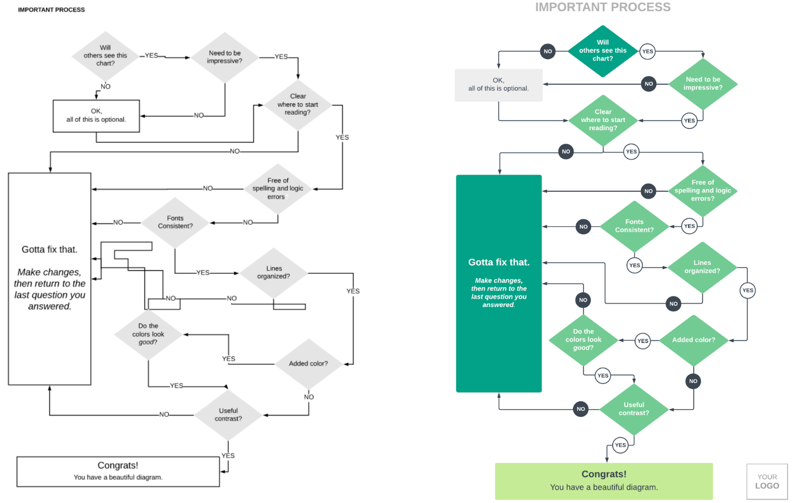

Structure & Flow of GI

1.frontend
유저가 어플리케이션 사용
2.backend
-web server단(Ngnix, Apache)
유저의 어플리케이션 사용 데이터를 받아옴
-WAX단(Nodejs)
정확하게 뭐하는건지 잘 모르겠음
-큐 혹은 다른 방법 이용(Kafka, RabbitMQ)
앞의 web server의 데이터들을 NoSQL 데이터베이스로 전송
-NoSQL 데이터베이스(Elastic Search)
전송받은 데이터를 취합, 보관
-server API(Nodejs)
데이터베이스에서 데이터를 받아와 처리, 우리가 원하는 정보로 만들어줌
3.frontend
유저가 알아보기 쉽게 정보를 나타냄(react)
4.배포
Jenkins with Ansible CI/CD
5.개발 방법론
Agile manifest